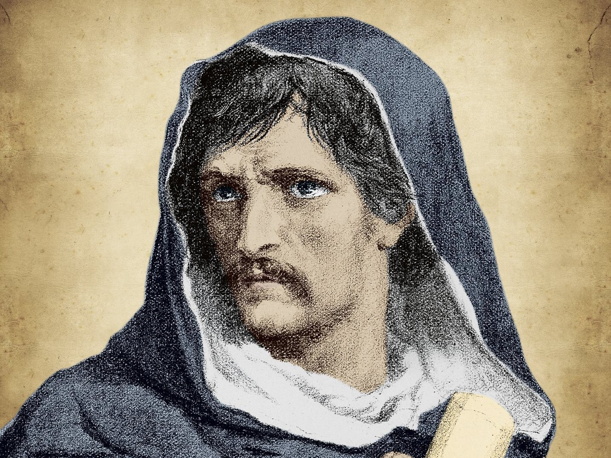

Giordano Bruno fue un filósofo, poeta, matemático, astrónomo y fraile dominico italiano del siglo XVI. Nació en 1548 en la ciudad de Nola, que entonces formaba parte del reino de Nápoles. Bruno es conocido por su martirio por defender ideas científicas, como la del universo infinito, adelantada al pensamiento de sus contemporáneos. Bruno rechazó el geocentrismo y apoyó la teoría de que cada estrella era un sol rodeado de planetas, similar al nuestro. Consideraba que tales afirmaciones podían coexistir con la doctrina religiosa del cristianismo. Durante su tiempo como fraile leía al holandés Erasmo de Rotterdam. De allí surgió mucho de su conocimiento y de su concepción filosófica, pero esos textos eran prohibidos por la iglesia, lo que llevó a que Bruno fuese relacionado con el ocultismo.

Su filosofia
La filosofía de Giordano Bruno se basa en la idea de que el universo es infinito y está lleno de mundos habitados, lo cual era una concepción radical para la época. Bruno también creía que el universo era un todo orgánico y que Dios era la fuerza que lo animaba y lo unificaba. Bruno tenía también una concepción materialista de la realidad, según la cual todos los objetos se componen de átomos que se mueven por impulsos: no había diferencia, pues, entre materia y espíritu, de modo que la transmutación del pan en carne y el vino en sangre en la Eucaristía católica era, a sus ojos, una falsedad.
Como impacta nuestra vida
La teoría de Giordano Bruno fue una visión revolucionaria del universo que ayudó a establecer las bases de la astronomía y la física modernas. Su legado sigue siendo relevante hoy en día y es un recordatorio de la importancia de la libertad de pensamiento y la libertad de expresión. Sus revolucionarias ideas sobre el universo y la religión le valieron la implacable persecución de los inquisidores de Roma, que lo procesaron y lo condenaron a morir en la hoguera. Así nació su leyenda como mártir, que soportó el sufrimiento con tal de apegarse a los principios científicos.